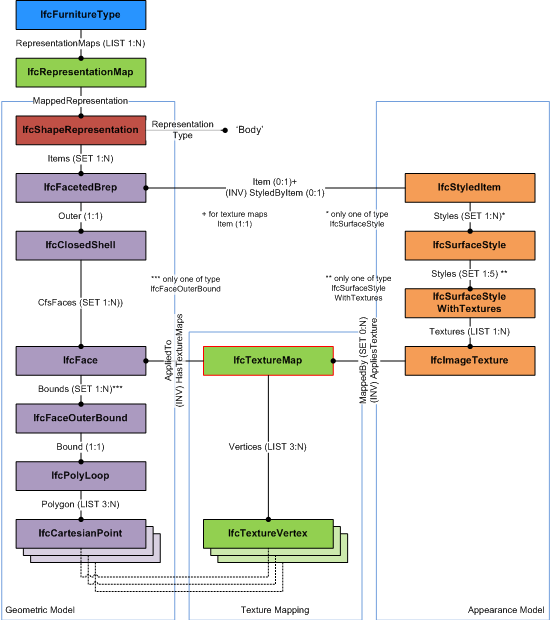

8.12.3.42 IfcTextureMap
| Image de texture |
| Texturmapping |
An IfcTextureMap provides the mapping of the
2-dimensional texture coordinates to the surface onto which
it is mapped. It is used for mapping the texture to surfaces
of vertex based geometry models, such as
The IfcTextureMap has a list of
TextureVertex, that corresponds to the points of the
outer face bound of the vertex based geometry item. The
corresponding pair of lists is:
- the list of Polygon of the
IfcFaceOuterBound of type
IfcCartesianPoint, and
- the list of Vertices of type
IfcTextureVertex.
Each IfcTextureVertex (given as S, T coordinates of
the 2-dimension texture coordinate system) corresponds to the
geometric coordinates of the IfcCartesianPoint
(given as 3-dimension X, Y, and Z coordinates within the
object coordinate system of the geometric item).
NOTE Definition according to
ISO/IEC 19775-1:
The TextureCoordinate node is a geometry property node that
specifies a set of 2D texture coordinates used by
vertex-based geometry nodes to map textures to
vertices.
NOTE In contrary to
the X3D vertext based geometry, for example IndexedFaceSet
and ElevationGrid, the vertext based geometry in IFC may
include inner loops. The areas of inner loops have to be
cut-out from the texture applied to the outer loop.
|

|
Figure 344 illustrates applying a texture map to a vertex
based geometry.
|
|
Figure 344 — Texture map
|
|
HISTORY New entity in IFC2x2.
IFC2x3 CHANGE The attribute Texture is deleted, and the
attribute TextureMaps is added.
IFC4 CHANGE The attribute TextureMap is replaced by
Vertices, and the attribute AppliedTo is
added.
Informal Propositions:
- The IfcFace referenced in AppliedTo
shall be used by the vertex based geometry, to which this
texture map is assigned to by through the
IfcStyledItem.
XSD Specification:
<xs:element name="IfcTextureMap" type="ifc:IfcTextureMap" substitutionGroup="ifc:IfcTextureCoordinate" nillable="true"/>
<xs:complexType name="IfcTextureMap">
<xs:complexContent>
<xs:extension base="ifc:IfcTextureCoordinate">
<xs:sequence>
<xs:element name="Vertices">
<xs:complexType>
<xs:sequence>
<xs:element ref="ifc:IfcTextureVertex" minOccurs="3" maxOccurs="unbounded"/>
</xs:sequence>
<xs:attribute ref="ifc:itemType" fixed="ifc:IfcTextureVertex"/>
<xs:attribute ref="ifc:cType" fixed="list"/>
<xs:attribute ref="ifc:arraySize" use="optional"/>
</xs:complexType>
</xs:element>
<xs:element name="MappedTo" type="ifc:IfcFace" nillable="true"/>
</xs:sequence>
</xs:extension>
</xs:complexContent>
</xs:complexType>
EXPRESS Specification:
 EXPRESS-G diagram
EXPRESS-G diagram
Attribute Definitions:
| Vertices | : |
List of texture coordinate vertices that are applied to the corresponding points of the polyloop defining a face bound.
|
| MappedTo | : |
The face that defines the corresponding list of points along the bounding poly loop of the face outer bound.
NOTE The face may have additional inner loops. The IfcTextureMap and its Vertices only correspond with the coordinates of the IfcPolyloop representing the outer bound.
|
Inheritance Graph:
 Link to this page
Link to this page